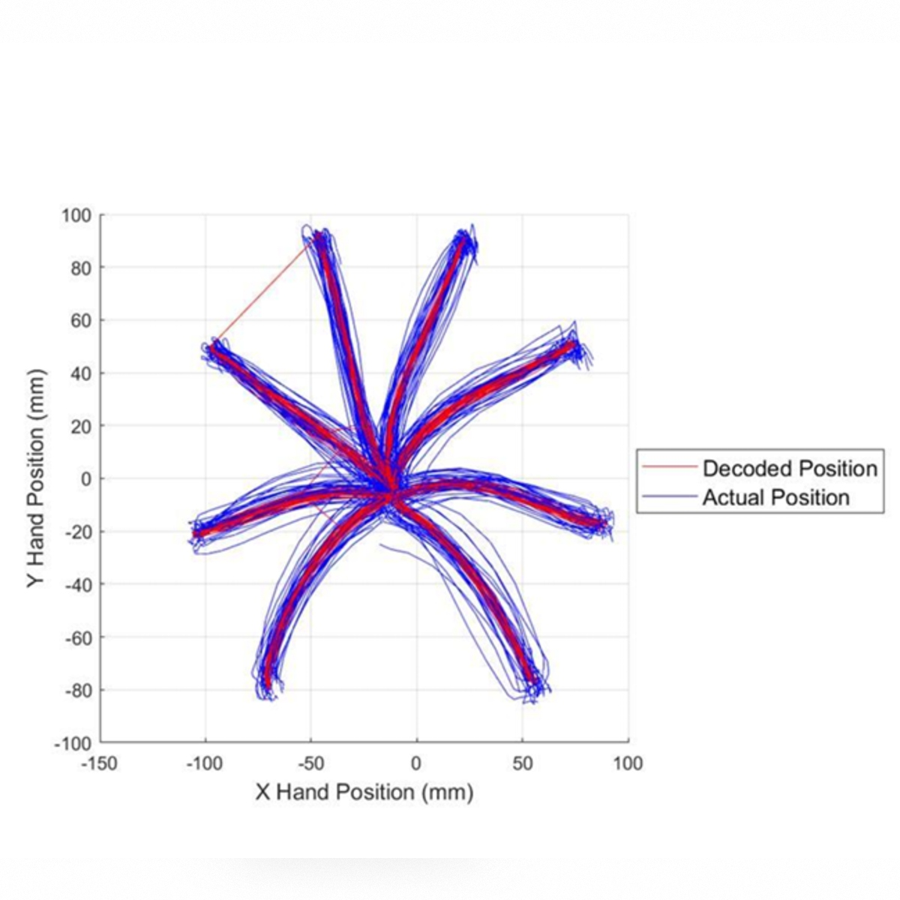
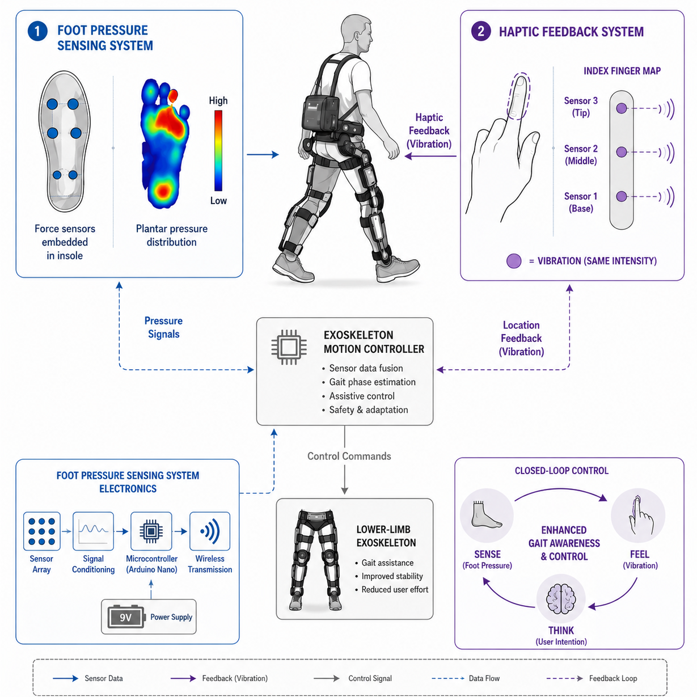

Postdoctoral Researcher
Biomedical Signal Processing & Digital Health
📍 London, UK
About Me
I am a Postdoctoral Researcher at Imperial College London with interests spanning signal processing, machine learning, data analysis, sensing technologies, algorithm development, and digital health. My work focuses on developing intelligent systems that can extract meaningful information from complex real-world data, with applications in healthcare, human movement analysis, physiological monitoring, and assistive technologies. I am particularly interested in combining signal processing, computational methods, and software development to create practical technologies that can operate continuously and unobtrusively in everyday environments.
My broader interests include biomedical signal processing, human-centred sensing, digital biomarkers, machine learning for healthcare, embedded and sensing systems, and the translation of research into deployable real-world technologies. I enjoy working across the full pipeline of research and development, from algorithm design and coding to system validation, data interpretation, and real-world deployment.
Skills
I bring broad technical expertise spanning signal processing, software development, scientific computing, hardware prototyping, embedded systems, and technical communication.
Projects
Co-founder of Zoiva, a digital health spinout from Imperial College London. Developing AI-powered contactless radar sensors for continuous monitoring of movement, behaviour, and physiological signals in real-world environments. Two patents filed; £660k non-dilutive funding secured; pre-seed raise planned for 2026.
End-to-end pipeline for radar-based PD gait analysis: clutter suppression, STFT spectrogram generation, gait event detection, and spatiotemporal feature extraction. Classification pipeline distinguishing PD from healthy cohorts using data from multi-radar UWB trials.
Multi-target tracking system combining Kalman filtering with JPDA and Hungarian algorithm data association. Simultaneously tracks multiple individuals from a single radar, with simulated Boulic-Thalmann synthetic human models for algorithm validation.
Real-time interactive demonstration system using a UWB radar for contactless hand position tracking to control a Pong game. Developed for public engagement and outreach, showcasing real-world radar sensing capabilities in an intuitive, interactive format.
Participation in the IEEE Radar Heart Rate Estimation Challenge. Developed signal processing algorithms for non-contact heart rate extraction from radar backscatter data, combining micro-Doppler analysis with physiological signal filtering techniques.
Integration and evaluation of the Infineon BGT60TR13C 60 GHz FMCW radar sensor for health monitoring applications. Includes SDK integration, data recording pipelines, and Boulic-Thalmann simulations for synthetic human gait modelling.

Developed a causal neural decoder in MATLAB to estimate hand movement trajectories from neural spike train recordings. Implemented and evaluated multiple classifiers, including k-Nearest Neighbours (k-NN), Support Vector Machines (SVM), and Bayesian approaches, achieving 99.75% reaching-angle classification accuracy through majority voting. Principal Component Regression (PCR) was used for hand trajectory estimation, outperforming Non-Linear Least Mean Squares (N-LMS) in both accuracy and computational efficiency.
This work was done as part of a group project for the Brain Machine Interfaces module during the MEng degree at Imperial College London.

Developed hardware upgrades for the Exo-H3 powered lower-limb exoskeleton by Technaid as part of the Cybathlon 2020 project. Investigated whether additional sensor information and intuitive haptic feedback could improve exoskeleton control performance beyond conventional sEMG-based control approaches. Work included the development and integration of sensing and haptic feedback systems to support motion intention recognition and user feedback.
This work was done as part of the Final Year Project for the MEng degree in Bioengineering at Imperial College London.
Videos
Step-by-step visualisation of the full signal processing pipeline: clutter suppression, STFT spectrogram generation, gait event detection, and foot trajectory extraction from radar data.
Live demonstration of the UWB radar gait analysis system, showing real-time micro-Doppler processing and spatiotemporal feature extraction as a participant walks in front of the sensor.
Publications
Curriculum Vitae
Download my full curriculum vitae for a complete overview of my academic background, research experience, publications, and skills.
Download CV (PDF)Get in Touch
I am always happy to discuss research collaborations, consulting opportunities, or questions about my work. Fill in the form below or find me on the links at the bottom of the page.